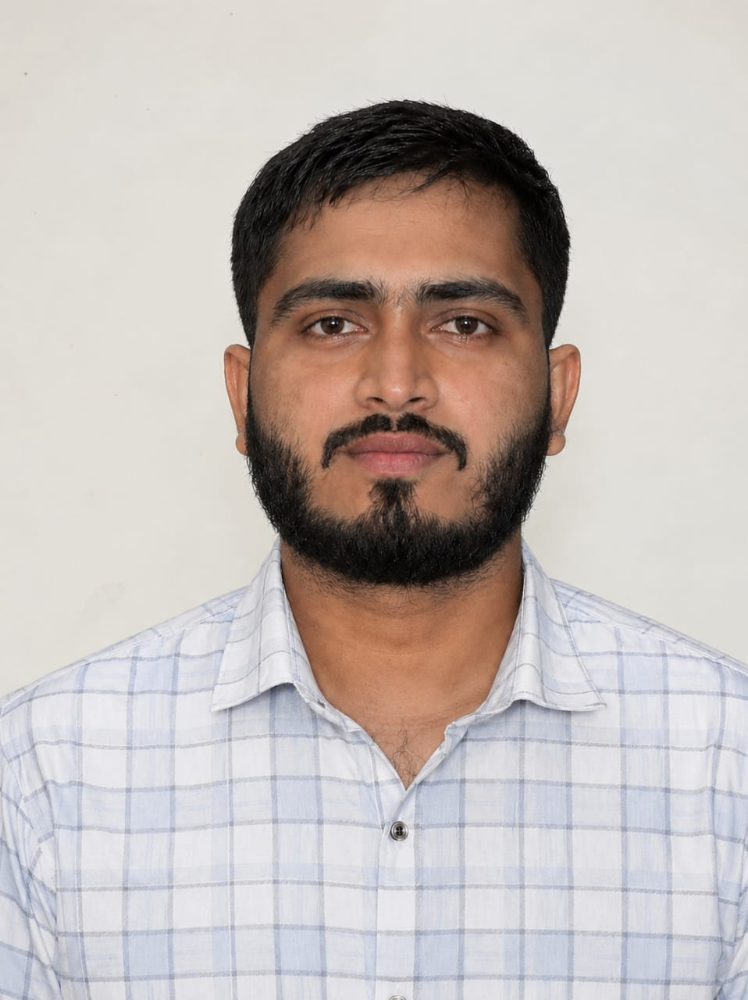

Contact: py8759518@gmail.com
Linkedin: Prince yadav
Phone number: 986XXXXXXX
Github: Prince137-yadav
|
 |
Hi, I'm Prince 👋,I am a B.Tech Computer Science & Engineering graduate from I.K. Gujral Punjab Technical University, Jalandhar, with a CGPA of 7.73. I am a Python Full Stack Developer with an interest in building practical and user-friendly web applications. My technical skills include Python, Django, HTML, CSS, JavaScript, SQL, Bootstrap, and database management. I have worked on projects such as an Event Management System, where I used Python and Django for backend development and Bootstrap for the frontend. During my college journey, I also worked as a Department Coordinator and served as an NCC Cadet, which helped me develop communication, teamwork, discipline, responsibility, leadership, and problem-solving abilities. I enjoy learning new technologies, solving programming problems, developing applications, and turning ideas into working solutions. My goal is to start my professional career in software development and continuously grow as a developer. |
| Education | Institution | Percentage / SGPA |
|---|---|---|
| B.Tech CSE | Swami Vivekanand Institute of Engineering & Technology | 7.73 SGPA |
| Intermediate | Vivekanand Kendra Vidyalaya | 62% |
| Matric | Vivekanand Kendra Vidyalaya | 79% |
Jan 2026-Aug-2026
Aug 2024-Dec 2025
I developed an Event Management System using Python, Django, HTML, and CSS. The main objective of this project is to simplify event planning and management. Users can view event details, explore upcoming events, and manage event-related information. Django is used for backend development, while HTML and CSS are used to create a user-friendly and responsive interface. This project helped me improve my programming, database management, web development, and problem-solving skills.
Developed a Hostel Gate Pass Management System using HTML, CSS, and JavaScript to simplify the process of managing student gate pass requests. The system provides a user-friendly interface for submitting gate pass requests and managing student exit details. JavaScript is used to handle user interactions and form validation, while HTML and CSS are used to structure and style the website. This project helped me strengthen my frontend development skills, improve my understanding of user interface design, and develop problem-solving abilities.